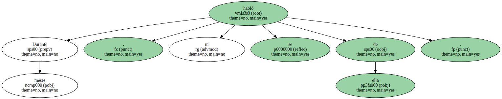
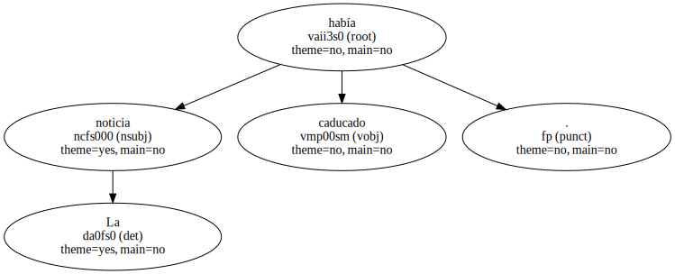
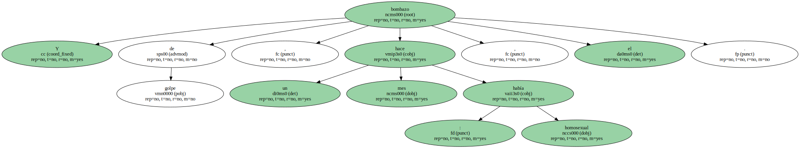
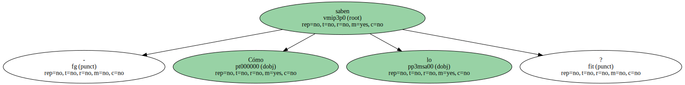
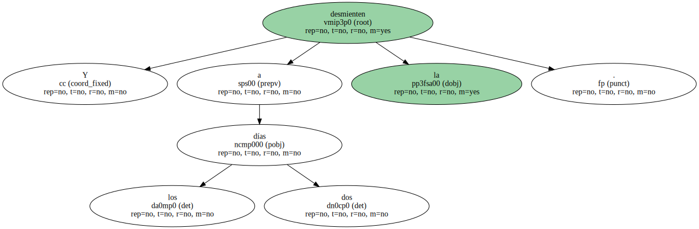
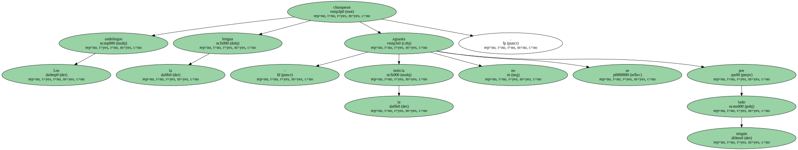
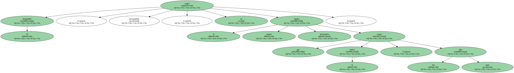
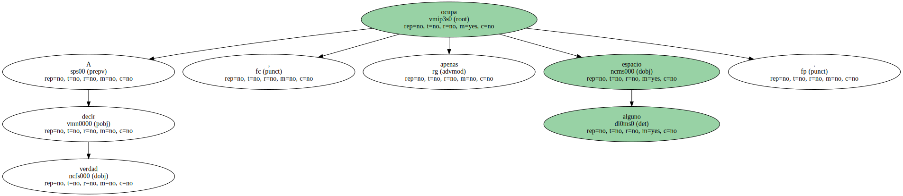
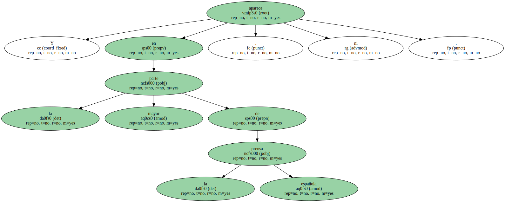
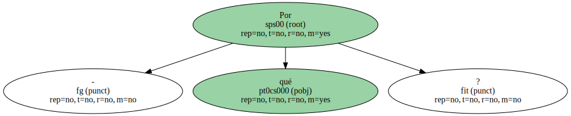

Hace un mes apareció en la prensa , radio y televisión que aquel hombre que habían encontrado en los hielos de los Alpes hace año y medio era homosexual.
A pesar de que , año y medio atrás , al descubrirlo , habían incluso dudado de si era creo que abuelo de no sé qué señora que decía que lo había perdido por ahí.
Después dijeron que no , que no sólo no era pariente de la tal señora sino que había vivido 5.000 años atrás.
La momia acabó en un frigorífico de la Universidad de Innsbruck.
Durante meses , ni se habló de ella.
La noticia había caducado.
Y de golpe , hace un mes , el bombazo : había homosexual.
- Cómo lo saben.
Por los restos de esperma encontrados en la cavidad anal.

La noticia aparece en todas partes : en noticiarios televisivos , en diarios , en revistas gays y científicas.

Y a los dos días la desmienten.
Una científica dice que es imposible que el esperma se haya conservado cinco milenios.
Los andrólogos chasquean la lengua : la noticia no se aguanta por ningún lado.
El desmentido , curiosamente , no ocupa el mismo espacio informativo que ocupó la noticia , dos días antes.
El desmentido , curiosamente , no ocupa el mismo espacio informativo que ocupó la noticia , dos días antes.
A decir verdad , apenas ocupa espacio alguno.
Y en la mayor parte de la prensa española , ni aparece.
- Por qué.